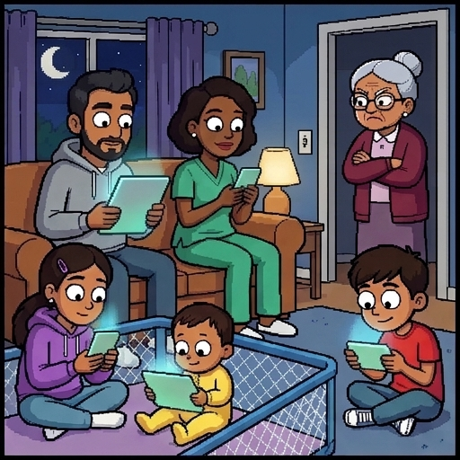
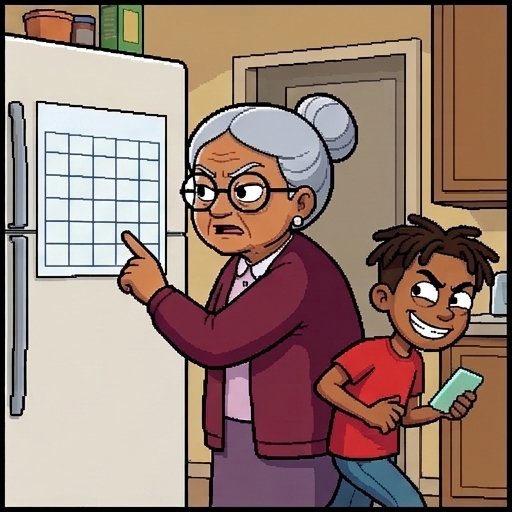
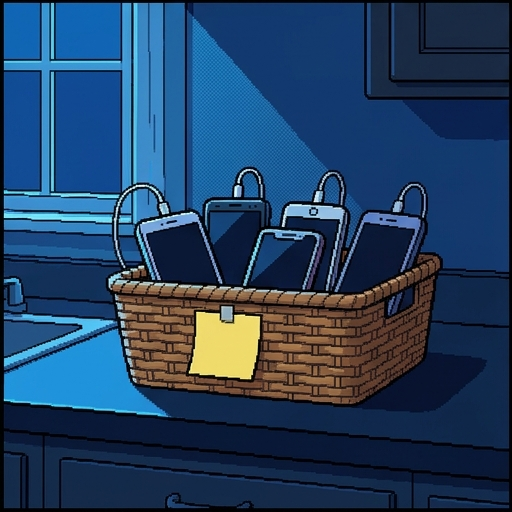
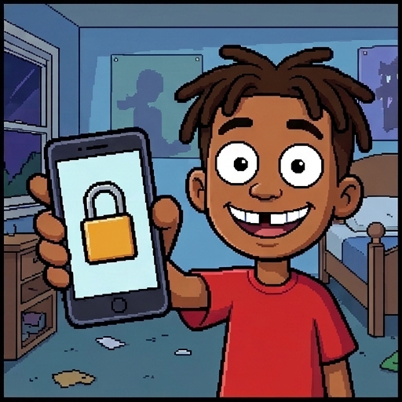
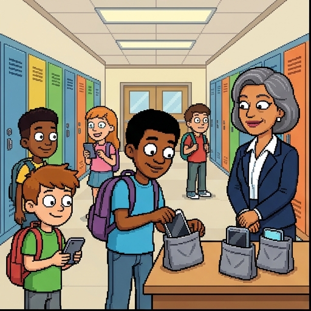
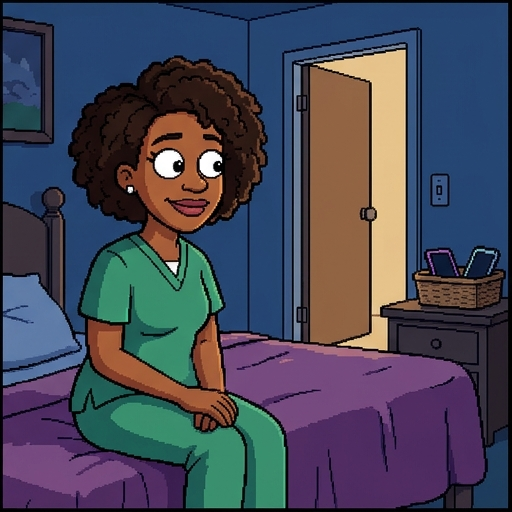
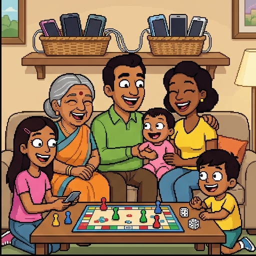

The Kids Are Online
In 1989, ten-year-old Dev Kapoor grew up with broadcast TV, a landline, and the mall arcade. Today Dev is a dad, and his kids grow up with algorithmic feeds, generative AI, and phones that never leave their hands.
Welcome to The Kids Are Online. In 1989, ten-year-old Dev Kapoor grew up with broadcast TV, a landline, and the mall arcade. Today Dev is a dad. His kids grow up with algorithmic feeds, generative AI, and phones that never leave their hands. Whenever it's your turn, I'll stop and wait for you.
Use → (or Next) to advance and reveal points. F = fullscreen.

Rules at the Breaking Point
"No TV until homework is done," says Grandma Asha, Dev's mother. "It worked on Dev."
Grandma Asha, Dev's mother, has a rule. No TV until homework is done. She says it worked on Dev.
- In 1989, one clear household rule kept Dev on track. There was one TV, and it sat in the living room.
- Today Dev and his wife Tasha are raising three kids: Zoe, 13, Marcus, 10, and baby Rosie.
- Marcus gets around the parental lock in seconds, and Zoe stays up scrolling until two in the morning.
- Rules alone can't keep up with screens that travel in every pocket. This terrain also takes virtue.
Before We Begin
Five initial value questions, with no right or wrong answers. State where you stand now, and we will revisit them at the end of the day.
Setting strict time limits on screen use is enough to raise digitally healthy children.
A person who avoids breaking digital laws or school policies has acted virtuously online.
Modern technologies are morally neutral tools whose effects depend entirely on how individuals choose to use them.
Algorithms that maximize user engagement inevitably undermine human self-control.
High-tech societies require genuinely new moral virtues that classical philosophers never imagined.
Here's where you stand now. Rate each of these five statements by how much you agree. There are no right or wrong answers, and you'll rate them again at the end of the day. When you've rated all five, press Submit.
Saved. You'll come back to these at the end.
What Happened to Dev's World?
In 1989, the whole Kapoor family gathered around one wooden TV set.
Let's see what happened to Dev's world. In 1989, the whole Kapoor family gathered around one wooden TV set.
- Media consumption was a shared household event bounded by scheduled hours and commercial breaks.
- Dev played eight-bit games at the mall arcade and made prank calls on the kitchen landline.
- Today, digital media is individualized, portable, continuously personalized, and designed for infinite engagement.
- The environment shaping human habits has shifted from occasional broadcast entertainment to pervasive digital immersion.

Rules as Developmental Scaffolding
Aristotle held that the young need good rules while their habits form (Nicomachean Ethics X.9). Rules are a means, not the goal.
Aristotle held that the young need good rules while their habits form. That's in the Nicomachean Ethics, Book Ten, chapter nine. Rules are a means, not the goal.
- Consistent boundaries protect the quiet mental space adolescents need to focus, read, and sleep.
- Yet rules that are erratic, unenforceable, or purely punitive merely encourage sneakiness and evasion.
- External rules serve as temporary scaffolding to help emerging self-regulation take root.
- The ultimate goal is raising young people who can someday govern their own attention without surveillance.
Rules vs. Virtues in Digital Life
Navigating modern technologies requires both external guardrails and cultivated character traits.
Navigating modern technologies takes both external guardrails and cultivated character traits. On one side, Rules, the external scaffolding. These are clear boundaries that protect vulnerable cognitive spaces while young habits are still forming. For example, a household agreement that phones sleep in the kitchen overnight protects adolescent sleep. On the other side, Virtues, the internal self-regulation. These are cultivated dispositions and discernment that govern choices when young people are on their own. For example, a teenager who notices algorithmic manipulation and chooses to disengage when anxiety rises.
Clear boundaries that protect vulnerable cognitive spaces while young habits are still forming.
A household agreement that phones sleep in the kitchen overnight protects adolescent sleep.
Cultivated dispositions and discernment that govern choices when young people are on their own.
A teenager who notices algorithmic manipulation and chooses to disengage when anxiety rises.
The Developmental Role of Rules
Rules
Virtues
Phones sleep in the kitchen overnight
A teenager notices a feed is making her anxious and logs off on her own
No screens until homework is done
A teen decides for herself when to put the phone down
Temporary scaffolding while self-control takes root
Self-regulation that keeps working when no adult is watching
Rules or virtues? Sort each of these six items under Rules or Virtues. When every item is placed, press Check answers.
Right. Rules are external scaffolding while habits form. Virtues are the inner self-regulation the scaffolding is for.
Virtue is a settled state of character, built by practice.
We become just by doing just acts, temperate by doing temperate acts, brave by doing brave acts.
Virtue as an Acquired Disposition
"I know I should put the phone down," Dev sighs at midnight, still scrolling. "Doing it is the hard part."
Dev sighs at midnight, still scrolling. He knows he should put the phone down, but doing it is the hard part. Here's Aristotle's view: virtue is a settled state of character, built by practice. In his words, we become just by doing just acts, temperate by doing temperate acts, and brave by doing brave acts.
- Aristotle observed that simply memorizing ethical definitions does not make a person good.
- A moral virtue is a stable disposition of character, formed through repeated practice until it becomes second nature.
- Virtues are neither fleeting emotional moods nor genetic personality traits that people are born with.
- Dev's midnight scrolling became a habit one night at a time. Good character is built the same way, action by action.
The Doctrine of the Mean
Aristotle describes each moral virtue as a mean between two vices, one of excess and one of deficiency.
Aristotle describes each moral virtue as a mean between two vices: one of excess, and one of deficiency.
- Courage sits between the cowardice of running away and the rashness of skateboarding off the garage roof.
- Temperance sits between bingeing every snack in the house and the joyless self-denial of Mr. Pruitt next door, who allows himself nothing.
- Finding the appropriate mean is not an arithmetic formula; it requires context, purpose, and discernment.
- Digital flourishing requires discovering balanced habits of engagement rather than choosing between total addiction and total abstinence.
Cross-Cultural Traditions of Virtue
The insight that human flourishing requires cultivated character spans global philosophical traditions.
The insight that human flourishing requires cultivated character spans global philosophical traditions.
- Confucian ethics emphasizes ren (humane benevolence) and li (shared relational rituals that shape daily life).
- Tasha's rule of family dinner with phones off, and her habit of really listening, is this kind of relational ritual.
- Buddhist philosophy teaches upāya (skillful means) and karuṇā (compassion), adapting responses to changing conditions.
- Classical traditions agree that human beings require deliberate practices and supportive environments to flourish.

Re-Evaluating Marcus
At first glance, Marcus looks like a list of vices: cheeky, undisciplined, and bored within a minute of any screen going dark.
At first glance, Marcus looks like a list of vices: cheeky, undisciplined, and bored within a minute of any screen going dark.
- He cracked the parental lock on his first try, and he sells his classmates cheat codes for their games.
- But when a group chat started mocking Zoe's drawings, Marcus called the posters out by name and took the backlash himself.
- He is quick, funny, and resourceful, and he will not follow a rule he thinks is unfair.
- Cultivating virtue in young people does not mean crushing their spirited vitality; it means channeling their gifts toward the good.
Evaluating Virtue Concepts
A virtue is a stable, acquired disposition developed through ongoing habituation and practice.
Aristotelian, Confucian, and Buddhist traditions agree that flourishing takes deliberate practice and supportive surroundings.
Virtues are internal dispositions, not just compliance with external rules.
You are born with fixed virtues and vices that can never be altered by education or environment.
Virtue ethics consists of memorizing algorithmic checklists that dictate exact actions in every scenario.
Being virtuous requires complete emotional detachment and total isolation from digital society.
Evaluating virtue concepts. Check every statement that is true about virtue ethics across classical traditions. Then press Check answers.
Correct. Across classical traditions, virtue is an acquired, stable disposition aimed at human flourishing. It takes ongoing practice and inner moral motivation.
Old virtues, adapted, can help us live well with new technology.
New Tools, New Habits
In 2016 the philosopher Shannon Vallor asked whether classical virtues can guide a hyper-technological future. Her book's subtitle names the goal: a future worth wanting.
In 2016 the philosopher Shannon Vallor asked whether classical virtues can guide a hyper-technological future. Her book's subtitle names the goal: a future worth wanting. Her idea, in short: old virtues, adapted, can help us live well with new technology.
- Emerging technologies alter the material conditions and cognitive environments in which human lives unfold.
- Vallor calls our situation acute technosocial opacity: technology changes too fast for us to predict where it leads.
- Vallor proposes twelve technomoral virtues adapted specifically for high-tech societies.
- These virtues are not replacements for classical wisdom, but specialized expressions designed for an algorithmic world.
Technomoral Self-Control
Aristotle's temperance governed bodily pleasures like food and drink. Today, self-control is also a matter of attention.
Aristotle's temperance governed bodily pleasures like food and drink. Today, self-control is also a matter of attention.
- Vallor's technomoral self-control: choosing, and ideally wanting, what helps us flourish. Online, that starts with attention.
- Apps use infinite scroll, likes, and alerts to hold attention. In 2023, more than 40 states sued Meta, alleging such features hook kids.
- Self-control is not a grim act of raw willpower; it involves structuring our spaces and habits to protect focus.
- A person who masters this virtue decides consciously when to engage with screens rather than reacting to automated alerts.
Technomoral Honesty
In an era of generative text, synthetic voices, and deepfakes, honesty faces unprecedented challenges.
In an era of generative text, synthetic voices, and deepfakes, honesty faces unprecedented challenges.
- Vallor defines technomoral honesty as an exemplary respect for truth, shown in a commitment to truth-seeking online.
- It means resisting the temptation to outsource personal thinking to chatbots while pretending the work is our own.
- It involves refusing to amplify unverified viral rumors, algorithmic rage-bait, and deceptive synthetic media.
- Honesty means checking what chatbots claim. In 2023 a federal judge fined two lawyers for citing cases ChatGPT made up.
Technomoral Empathy
Communication technologies allow instant global connection while stripping away embodied emotional presence.
Communication technologies allow instant global connection, while stripping away embodied emotional presence.
- Vallor's technomoral empathy is a cultivated openness to being moved to care by others' feelings, even behind a screen.
- Text comments and social feeds encourage disinhibition, tempting users to treat ideological opponents as caricature targets.
- This virtue requires resisting the algorithmic incentive to convert interpersonal dialogue into public spectator sport.
- Practicing digital empathy means pausing before posting to consider how our mediated words will land upon a living person.
Defining the Technomoral Virtues
A virtue is a stable disposition of character.
Technomoral self-control protects our conscious attention from algorithmic hijacking.
Technomoral honesty requires an ongoing commitment to truth in an era of synthetic media.
Digital empathy means perceiving the human being behind the screen.
Fill in each gap by choosing or typing, then press Check.
Right. Vallor adapts classical virtue ethics to new technology. Attention is a main moral battleground, and empathy keeps the human being behind the screen in view.
Recognizing Digital Empathy
Self-control
Honesty
Empathy
Turning off autoplay and alerts, so you choose when to look at the screen
Refusing to hand in a chatbot's essay as your own work
Pausing before replying to a hostile comment, to think about the real person who wrote it
Not sharing a viral rumor you haven't checked
Remembering that the classmate in an embarrassing clip is a real person who will read the replies
Keeping your phone in another room while you study
Which of Vallor's technomoral virtues does each habit practice? Sort each one under Self-control, Honesty, or Empathy. When every item is placed, press Check answers.
Right. Self-control protects your attention. Honesty is a commitment to truth, including about whose work is whose. Empathy keeps the real person behind the screen in view.
Parenting in Oak Hollow
Coach Marcus, Zoe, and Rosie through three digital dilemmas. Choose guidance that builds virtue.
Now it's your turn to parent. Coach Marcus, Zoe, and Rosie through three digital dilemmas, and choose the guidance that builds virtue. Take the cases at your own pace. When you're ready, press Continue.
Habits formed in childhood shape character for life.
It makes no small difference, then, whether we form habits of one kind or of another from our very youth.
How Digital Environments Shape Habit
Aristotle taught that moral character is shaped long before children develop rational ethical arguments.
Aristotle taught that moral character is shaped long before children develop rational ethical arguments. Habits formed in childhood shape character for life. As he puts it, it makes no small difference whether we form habits of one kind or of another from our very youth.
- Early sensory environments establish baseline expectations for cognitive stimulation, boredom tolerance, and focus.
- The World Health Organization (2019) advises against screen time for babies and one-year-olds, and favors reading and play.
- Dev and Tasha discover that parenting takes environmental design as much as talking.
- Cultivating childhood virtue begins with creating quiet physical spaces where reflection, play, and presence can take root.
Share technology's benefits and risks fairly, and protect every person's dignity.
Technomoral Justice
"Why should I care about flourishing," laughs Vivian Stroud, founder of Oak Hollow's biggest app company, "when engagement pays this well?"
Vivian Stroud is the founder of Oak Hollow's biggest app company. She laughs and asks why she should care about flourishing, when engagement pays this well. Vallor's idea here: share technology's benefits and risks fairly, and protect every person's dignity.
- Vallor's technomoral justice seeks a fair share of technology's benefits and risks, and guards people's rights and dignity.
- Shoshana Zuboff (2019) calls the business of turning personal data into predictions about behavior surveillance capitalism.
- Justice also covers AI's hidden workers. In 2023, TIME reported Kenyans paid under $2 an hour to label toxic text for ChatGPT.
- Ethical character must be paired with structural resistance against technological systems designed to exploit vulnerability.
Adjust action, belief, and feeling as new technology demands.
The Danger of Rigid Moralism
"I have a strict rule for every possible occasion," says Mr. Pruitt next door, label maker in hand.
Mister Pruitt next door, label maker in hand, says he has a strict rule for every possible occasion. Vallor's idea here: adjust action, belief, and feeling as new technology demands.
- Vallor's technomoral flexibility is a skill for adjusting action, belief, and feeling to new and unstable technologies.
- Mr. Pruitt shows how rigid moralism breaks down when a new technology raises a question his rulebook never anticipated.
- A family that bans all screens entirely fails to prepare children for the complex digital society they must inevitably enter.
- Moral flexibility combines steady ethical commitments with creative, situational improvisation.

Decision Point: School Phone Bans
Not graded. By 2026 most U.S. states had limited phones in schools, but studies of the effects disagree.
Impose a strict bell-to-bell ban where phones are placed in magnetic pouches or lockers.
Allow unrestricted device access and rely on students to voluntarily practice digital mindfulness.
Ban phones during academic classes while permitting structured educational use and social lunch breaks.
This is a decision point. Oak Hollow Middle School, where Zoe and Marcus go, is debating a complete ban on smartphones during school hours. What should Principal Delgado do? This one isn't graded. By 2026, most American states had limited phones in schools, but studies of the effects disagree. Pick the answer closest to your view, and read its note.
Researchers are still studying this question. Both sides recognize that rules are only as valuable as the lasting character habits they help build. Next, the master virtue.
Technomoral Wisdom (Phronesis)
Shannon Vallor identifies technomoral wisdom as the master virtue that orchestrates all others.
Shannon Vallor identifies technomoral wisdom as the master virtue that orchestrates all others.
- Aristotle called this phronesis: practical judgment that finds the right action, in the right way, at the right time.
- Technomoral wisdom integrates self-control, honesty, and empathy to evaluate emerging tools in real time.
- It refuses both uncritical techno-optimism and reactionary technophobia, choosing technologies that genuinely serve human flourishing.
- For Dev and Tasha, wisdom means knowing when a device helps family life and when it crowds it out.
Understanding Technomoral Wisdom
It acts as a mechanical algorithm that calculates the optimal quantitative outcome for any technology policy.
It requires the total abandonment of emerging technologies to return to pre-industrial modes of living.
It operates as an isolated technical skill reserved exclusively for computer scientists and system engineers.
It acts as an integrative master virtue that harmonizes specific virtues to guide practical judgment in novel situations.
Understanding technomoral wisdom. Pick an answer.
Right. Technomoral wisdom is Vallor's master virtue. It draws on Aristotle's phronesis, and brings honesty, self-control, and empathy together to guide judgment in new situations.
See each moral choice as part of a larger moral whole.
Technomoral Perspective
Vallor asks of every new device not just what new powers it gives us, but whether it helps us become better human beings.
Vallor asks of every new device not just what new powers it gives us, but whether it helps us become better human beings. Her idea of perspective: see each moral choice as part of a larger moral whole.
- Technomoral perspective, in Vallor's account, is the habit of seeing each choice as part of a larger moral whole, not as an isolated problem.
- High-tech societies routinely confuse efficiency, speed, and optimization with lives rich in meaning and companionship.
- Perspective reminds clinicians, parents, and citizens that tools must serve moral ends rather than dictating them.
- This virtue helps families ask what kind of community they want to build before adopting every new technological convenience.
Technomoral Care and Stewardship
For Vallor, technomoral care is attentive, skilled concern for meeting other people's needs. Many writers extend the same concern to the planet.
For Vallor, technomoral care is attentive, skilled concern for meeting other people's needs. Many writers extend the same concern to the planet.
- On that wider view, care means maintaining, repairing, and protecting both digital systems and the ecological commons.
- Training and running AI takes electricity and cooling water. The IEA projects data-center power use will more than double by 2030.
- Care demands attention to the physical infrastructure, mineral extraction, and electronic waste that digital convenience conceals.
- Flourishing in the Anthropocene requires using technological power to regenerate the world rather than simply consuming it.

Technochauvinism vs. Technomoral Wisdom
Distinguishing blind faith in technological fixes from wise discernment about human needs. Technochauvinism is the data journalist Meredith Broussard's term.
Technochauvinism versus technomoral wisdom. This slide sets blind faith in technological fixes against wise discernment about human needs. Technochauvinism is the data journalist Meredith Broussard's term. On one side, Technochauvinism, also called solutionism. It's the uncritical belief that every human and social problem has a technological solution, code fix, or automated app. For example, giving a lonely, grieving teenager a conversational AI companion rather than fostering real-world human friendships. On the other side, Technomoral Wisdom, which is about human flourishing. It's the reflective capacity to discern which human goods require embodied presence, vulnerability, and sustained personal labor. For example, Tasha sitting at the foot of Zoe's bed, listening without screens, restoring the human bond that no algorithm can provide.
The uncritical belief that every human and social problem has a technological solution, code fix, or automated app.
Giving a lonely, grieving teenager a conversational AI companion rather than fostering real-world human friendships.
The reflective capacity to discern which human goods require embodied presence, vulnerability, and sustained personal labor.
Tasha sitting at the foot of Zoe's bed, listening without screens, restoring the human bond that no algorithm can provide.
Synthesizing the Framework
Technomoral wisdom is the master virtue that Aristotle called phronesis.
Technochauvinism, Meredith Broussard's term, falsely assumes every social problem can be solved by an algorithm.
Technomoral wisdom chooses technologies that genuinely serve human flourishing.
The ultimate goal of technomoral virtues is a future worth wanting.
Synthesizing the framework. Fill in each gap by choosing or typing, then press Check.
Right. Technomoral wisdom, Vallor's master virtue, rejects simplistic solutionism in favor of technologies that support deep human flourishing.
Revisiting Your Perspectives
Review the statements from the beginning of the lesson. Re-rate each one. Retaining your original perspective is entirely valid; the goal is to evaluate whether your reasoning has deepened.
Now revisit the statements from the beginning of the lesson. Re-rate each one. Keeping your original view is entirely valid. The goal is to see whether your reasoning has deepened. When you've re-rated them, press Submit.
Saved. Next, the closing slide.

The Living Room Couch
"Parenting online is hard," Dev admits. "Mom's old rule won't cover it, and we can't face it blind."
Dev admits that parenting online is hard. His mother's old rule won't cover it, and they can't face it blind.
- Technologies will continue evolving, bringing dilemmas no rulebook foresees.
- Neither blanket bans nor passive surrender equips kids for an online world.
- Cultivating technomoral virtues provides young people an internal compass.
- Human character—patiently nurtured—remains our greatest technological safeguard.
Complete all exercises and both belief probes to finish.
For Further Reading
- Aristotle, Nicomachean Ethics, Book II. Read online. Virtue as a habit built by practice, and the doctrine of the mean.
- Shannon Vallor, Technology and the Virtues: A Philosophical Guide to a Future Worth Wanting (Oxford University Press, 2016), chapters 6 and 7. Publisher’s page. Her twelve technomoral virtues, then their use on social media.
- Shannon Vallor, “Social Networking and Ethics,” Stanford Encyclopedia of Philosophy (rev. 2021). Read online. A free overview, with a section on virtue and the good life online.
- Rosalind Hursthouse and Glen Pettigrove, “Virtue Ethics,” Stanford Encyclopedia of Philosophy (rev. 2026). Read online. An introduction to virtue ethics and its central ideas.
- Meredith Broussard, Artificial Unintelligence: How Computers Misunderstand the World (MIT Press, 2018). Broussard’s case against technochauvinism, the belief that technology always has the answer.
If you'd like to go further, here are some good places to start, each with a note on why it's worth your time. Thanks for playing.
About this lesson. Brendan Shea, PhD, wrote this lesson with help from AI tools. Claude (Anthropic) helped draft the text and code and check facts, and the illustrations were made with AI image generators. The narrator's voice is synthetic (Google Gemini text-to-speech). The author reviewed everything and is responsible for any errors.